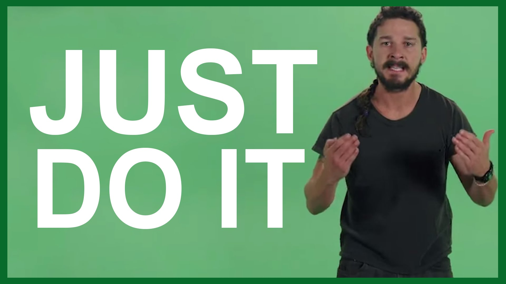

Shia LaBeouf "Just Do It" Motivational Speech (Original Video by LaBeouf, Rönkkö & Turner)
Step 1: Identify Your Insecurities
The first step is all about awareness. You need to identify the types of insecurities you typically struggle with. This will require uncovering irrational beliefs and unhelpful thoughts that are at the core of your insecurities.
Take a moment to ask yourself the following questions:
What exactly do I tend to feel insecure about?
What uncertainty exists that is making me feel insecure?
What worries or fears are making me feel insecure?
Why am I feeling insecure about these things?
What underlying irrational beliefs are at the core of these insecurities?
What unhelpful thinking styles are at the heart of these beliefs?
What is the root cause of all these insecurities?
This is all about peeling back the layers. The deeper you go, the better you will understand how you have come to develop these insecurities.
The root cause of your insecurities often stems from a cluster of memories you have held onto for many years. These memories influence your decisions and actions. And they are, of course, a result of past experience. However, your interpretation of those experiences is the determining factor in how you feel.
At the heart of these experiences are a set of limiting beliefs and/or unhelpful thoughts that you have chosen to adopt. You must first work through these areas to begin weeding out your insecurities.